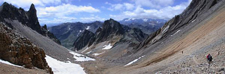

Zuidelijke Alpen 2004
zaterdag 18 september 2004 | Reisverhalen
Mijn arme reisgenoten van deze zomer wachten er al meer dan een maand op. Maar hier zijn ze dan: de foto's van onze veertiendaagse naar de Zuidelijke Alpen (een week bergwandelen en een week canyoning). Ik had gehoopt de beeldjes van een gepaste beschrijving te voorzien, maar dat zal nog even op zich laten wachten. Misschien helpt Kpi me uit de nood?

Pieter Schepens op 19 september 2004
Ik ben m'n best aan het doen. 'Druk druk' is een modewoord. Ik zou dringend wat minder modieus moeten worden...